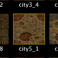

Miscellaneous
This section contains information about tasks which are not directly related to editing, but which are still important if you want to create maps for Quake. You will learn how to manage textures and prefabs as well as how to use and edit compiler profiles.
Managing Textures
Quake textures are loaded from so-called texture wads. Once you have one or more texture wads loaded, the textures contained therein are displayed in the texture browser, which you will find in the face tab of the inspector. Note that the order in which you load texture wads is important to the way duplicate textures are handled. If two texture wads contain a texture with the same name, TrenchBroom will use the texture from the most recently loaded texture wad. The order of the texture wads can be seen in the texture wad list below the texture browser.

In the above screenshot, only one texture wad was loaded. To load another texture wad, click on the plus button below the texture wad list. Click the minus button to unload the currently selected texture wad. You cannot reorder texture wads in the wad list. If you need to change the wad order, you need to delete the wads and re-add them in the desired order.
The texture browser displays all loaded textures in alphabetical order by default. Using the buttons on the left above the browser, you can toggle between ordering them by name and by usage. To filter the textures, you can use the buttons and the search field on the right above the browser. The buttons allow you to toggle between displaying all textures or only the textures used in the current map. If you enter a string into the search field, only the textures whose name contains that string are displayed in the browser. Each texture that is used in the current map is drawn with a yellow border in the texture browser (see screenshot on the left).
 The editor tracks which texture was most recently used. This is the texture which was on the most recently selected face or which was most recently clicked on in the texture browser. The most recently used texture is drawn with a red border in the texture browser. This texture is used for newly created brushes.
The editor tracks which texture was most recently used. This is the texture which was on the most recently selected face or which was most recently clicked on in the texture browser. The most recently used texture is drawn with a red border in the texture browser. This texture is used for newly created brushes.